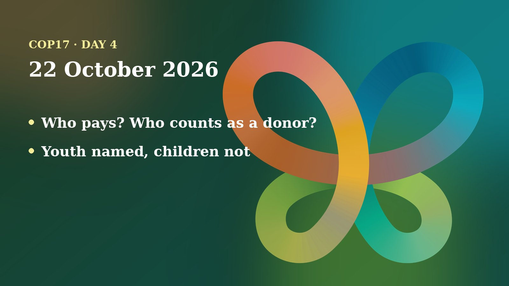

Thursday was a day of paperwork in the best sense. Two working groups worked through conference room papers, short draft decisions that are either approved or sent back for more talks, while six contact groups kept pushing the harder questions. The hardest one was money. As one delegate told the Earth Negotiations Bulletin, “I hope we are not bringing up old ghosts.”
The day in negotiations
Working Group II spent the day on the biosafety treaty, the Cartagena Protocol, and on invasive alien species. Working Group I handled gender, knowledge-sharing, education and the Nagoya Protocol on sharing the benefits of genetic resources. Contact groups met on resource mobilization, mainstreaming, climate change, health, the global review of progress, and special international rules for benefit-sharing. This account follows the Earth Negotiations Bulletin (ENB) report of the day and the UN’s unofficial, automatically generated transcripts, which are not an official record and may contain errors.
In Working Group II, several biosafety texts were approved. The compliance text passed without change. Others passed with edits, for instance after Japan asked that all requests to the Secretariat be “subject to the availability of resources”, and after Brazil asked that sharing information on national biotechnology rules be stressed as voluntary. Two points stayed open. One is an EU proposal that the Compliance Committee comment on the quality of the information countries submit. Cameroon and others said that goes beyond the committee’s role, and Panama and Brazil also opposed it, so it stays in brackets. The other is the review of how well the protocol is working, where delegates agreed to “welcome with appreciation” the biosafety findings of the global progress report but split on a list of capacities and on how to refer to risk assessment.
On invasive alien species, a compromise was reached on asking the Secretariat to develop scientific guidance on early detection and on sharing data, including to speed up emergency funding. The phrase on technology transfer “upon voluntary and mutually agreed terms” is still in brackets. Russia, among others, asked to bracket some requests until priorities and costs are clear.
Working Group I approved the midterm review of the Gender Plan of Action without comment. On the Nagoya Protocol’s compliance text, Saudi Arabia, speaking for 22 Arab countries (Egypt voiced the same support in the transcript), got references to capacity-building and financial resources added, and the text was approved as amended.
Positions and stakeholders
Here is where the groups stood, according to ENB and the transcripts:
- European Union: proposed the Compliance Committee clause, argued against heavy spending on artificial intelligence for the knowledge-sharing system, and led small groups to settle contested wording.
- African Group (Kenya) and Tanzania: Kenya said the format of the sixth national report must reflect countries’ feedback; Tanzania stressed that developing countries still struggle to reach biosafety funding.
- Brazil: pushed for voluntary submissions and for “developed country Parties and Parties voluntarily assuming such obligations” to provide resources, which was agreed in one text.
- Pacific small island states (Fiji, Cook Islands, Tuvalu): Fiji argued that small administrations face connectivity and staffing limits and should be recognised in the review; Fiji also proposed that Indigenous communities deliver education in their own languages.
- Egypt: wanted knowledge-system information routed through national focal points, citing accuracy concerns, then agreed to a compromise with Fiji.
- Guatemala and Australia: disagreed on how to list who should receive education resources, as covered below.
- Russia: proposed “other relevant stakeholders” in several places and asked to hold back some invasive-species requests.
Outside the negotiating rooms, the IUCN used a press conference at the conference to launch its first Red List of Coral Reef Ecosystems. According to the unofficial transcript, it found 96% of the 127 shallow-water reef ecosystems assessed to be critically endangered, meaning a very high risk of collapse within 50 years, while one ecosystem, in the Western Galapagos, has already collapsed. Speakers added that much of that risk is projected rather than already realised, and that local action such as better marine protected areas can still help.
The money question
The resource mobilization contact group, co-chaired by Imèn Meliane (Tunisia) and Carolina Caceres (Canada), continued from a revised draft. Four more options were submitted for who should pay, bringing the total to eight. Some delegates questioned the mandate behind the Secretariat study that several options rely on, and the Co-Chairs suggested more informal talks. The group also began on the criteria for the bodies that run the financial mechanism, including the authority of the COP, accountability, access and country ownership, and participation and inclusion.
ENB’s “In the Corridors” piece explains why this is touchy. Under Article 20 of the biodiversity convention, developed countries, and those who volunteer, provide new and additional money. The list of developed countries was agreed at the first COP and last revisited 20 years ago, at COP 8. The Global North points to changed economies, while the Global South wants developed nations to honour their obligations. ENB also recalled that this topic contributed to the suspension of the last COP in Cali, Colombia.
Other contact groups reported mixed results:
- Mainstreaming: agreement on “the full integration of biodiversity and its multiple values in decision-making” across sectors, but the alignment of sector actions with the framework’s goals stayed bracketed.
- Biodiversity and climate change: debate on how prescriptive the text should be, and whether to cite national climate plans and a reference to Article 20 on finance.
- Global review: language welcoming coalitions and partnerships was agreed, but wording on phasing out perverse incentives (subsidies that harm nature) stalled, so a small group was set up.
- Benefit-sharing instruments: countries disagreed on the scope, name and timeline of an informal group.
Numbers to know
- 8: options now on the table for widening the contributor base, up from four, according to ENB.
- 96%: of 127 coral reef ecosystems rated critically endangered by the IUCN, per its press conference.
- 0.96 to 0.74: fall of the Red List Index for coral species between 1998 and 2024, as presented at the same event.

Through a child and youth lens
The day’s clearest youth moment was a drafting fight. In the communication, education and public awareness text, delegates debated resources for education activities. Australia said Indigenous peoples, women and youth should not be asked to provide financial support, and Guatemala said groups not named in the text become invisible. After informal consultations, ENB reports that delegates agreed to keep only a mention of Indigenous peoples and local communities for those resources, so women and youth dropped out of that line. Youth and women were, however, retained among stakeholders in the knowledge-management text.
Children were not mentioned in the Working Group I transcript. Delegates did approve inviting countries to use the draft global plan of action for education on biodiversity “on a voluntary basis” and to integrate biodiversity education into national strategies, which is where young people will meet this work in school. The money debate also matters to them: how the financial mechanism is run, and who pays, shapes whether national biodiversity plans are funded for the decades that today’s children will live through.
As a member of the UNICEF Global Delegation, I advocate for including children and youth in the CBD process. Today’s lesson is that being named in a list is not a detail. It decides who is visible when the money and the work are shared out.
On my calendar today
Scheduled for Thursday: the See It, Be It: Nature Positive Futures Campaign Launch, organised by UNDP and UNICEF, from 12:00 to 13:00 at the UN Pavilion in the Blue Zone. It presents careers that help nature to young people, and I am scheduled to speak and am featured in the campaign. The Armenia Tree Project booth in the Blue Zone is scheduled to be staffed 09:00 to 11:00 and 13:00 to 20:00. Booth co-hosting does not block my calendar, and I am open to speaking requests.
What to watch tomorrow
- Whether the open biosafety paragraphs, on the effectiveness review and on dedicated biosafety funding, are settled in informal talks.
- New draft texts from the resource mobilization group on the contributor-base options.
- Whether the global review small group can settle the perverse-incentives wording.
- Whether youth and women are written back into the education resources text.
Follow where I am each day on my COP17 schedule, and the daily news in the Newsroom.
Sources
- Earth Negotiations Bulletin, Vol. 9 No. 887 (2026), UN Biodiversity Conference Highlights: Thursday, 22 October 2026. https://enb.iisd.org/sites/default/files/2026-10/enb09887e.pdf
- UN Transcripts (22 Oct 2026), Working Group I (3rd meeting), UN Convention on Biodiversity - COP 17. Automatic, unofficial transcript. https://transcripts.un.org/en/asset/k1d/k1dxhig6zc
- UN Transcripts (22 Oct 2026), Working Group II (6th meeting), UN Convention on Biodiversity - COP 17. Automatic, unofficial transcript. https://transcripts.un.org/en/asset/k13/k13f8j9k8r
- UN Transcripts (22 Oct 2026), Press Conference: World’s coral reefs on the brink: IUCN launches Red List of Coral Reefs Ecosystems. Automatic, unofficial transcript. https://transcripts.un.org/en/asset/k12/k12pn1fs6b